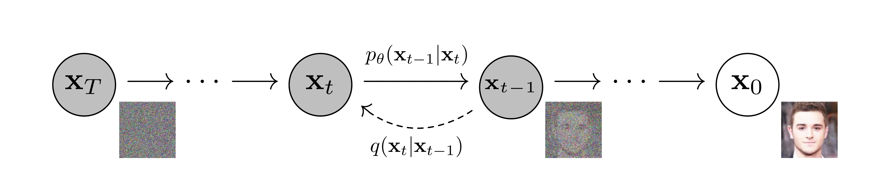
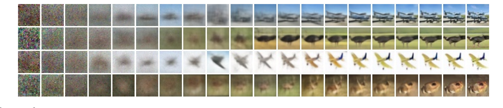

Denoising Diffusion Probabilistic Models
Jonathan Ho, Ajay Jain, Pieter Abbeel · NeurIPS 2020 · arXiv:2006.11239
DDPM 不是 U-Net，也不是视频模型。它定义了一套“如何破坏数据、如何训练去噪器、如何逐步采样”的概率建模框架。后面的 DDIM 改采样轨迹，CFG 改条件控制，DiT 改去噪网络，LDM 改工作空间；它们都可以建立在这块地基上。
§1 一句话：先学会认噪声，再从噪声走回数据
固定一个逐步加高斯噪声的前向过程 $q$，再训练参数化逆过程 $p_\theta$。真正落地时，网络不直接预测“上一张图”，而是预测当前样本里混入的噪声 $\epsilon$。
展开原文 · Abstract
“Our best results are obtained by training on a weighted variational bound.”

1. 训练时主动破坏数据
从真实样本 $x_0$ 出发，按噪声日程逐步得到 $x_t$。这条链完全已知，因此监督信号可以无限在线生成。
2. 学习每一步如何撤销噪声
网络接收 $(x_t,t)$，估计其中的噪声；由估计值构造 $x_{t-1}$ 的高斯均值。
3. 推理时从随机噪声反复去噪
先采 $x_T\sim\mathcal N(0,I)$，再执行 $T$ 次逆转移，最终获得 $x_0$。
§2 前向过程：把数据逐步变成高斯
训练生成器最难的是没有“正确的生成路径”。DDPM 反过来人为规定一条破坏路径：每步只加一点高斯噪声。因为路径已知，逆向学习就变成很多个带噪回归问题。
2.1 单步公式：一边保留信号，一边注入随机噪声
- $\beta_t$
- 第 $t$ 步注入的噪声方差；论文用从 $10^{-4}$ 到 $0.02$ 的线性日程。
- $\sqrt{1-\beta_t}$
- 保留原信号的系数。每一步都轻微缩小信号，再补上高斯噪声。
- $T=1000$
- 原论文的离散步数。小步近似容易，但采样必须串行执行一千次。
上面的 $\mathcal N$ 写法描述“$x_t$ 整体会怎样分布”；下面的等式描述“怎样实际生成一个 $x_t$”。它们在给定 $x_{t-1}$ 时表示同一件事。
- $t$
- 扩散的时间步。$\beta_t$ 在指定的第 $t$ 步是固定值，但通常会随 $t$ 改变。
- $\epsilon_t$
- 第 $t$ 步新抽取的标准高斯噪声图；它与 $x_t$ 形状相同，每次采样都可以不同。
- $I$
- 单位矩阵。对角线是 1，表示每个像素/通道维度的标准噪声方差为 1；非对角线是 0，表示不同维度之间不相关。
- $n_t=\sqrt{\beta_t}\epsilon_t$
- 只是给“第 $t$ 步实际加入的整张噪声”起个简写。$n_{t,i}$ 表示这张噪声图中第 $i$ 个像素/通道位置的噪声值；$t$ 管时间，$i$ 管位置。
什么叫“固定 $x_{t-1}$”和条件期望
竖线 $\mid$ 读作“在……已知的条件下”。计算 $\mathbb E[x_t\mid x_{t-1}]$ 时，想象拿定同一张 $x_{t-1}$，反复抽取不同的 $\epsilon_t$ 来生成很多张 $x_t$，然后逐像素求平均。“固定”只是说求这个平均时不改变 $x_{t-1}$，不是冻结模型参数。
- $\mathbb E[\epsilon_t]=0$
- 高斯噪声有正有负，大量采样后平均为 0。
- $\sqrt{\beta_t}\epsilon_t$
- 它是绕着 0 的随机偏移，只让每次结果不同，不改变平均中心。
- 条件均值
- 因此很多次结果的中心是 $\sqrt{1-\beta_t}x_{t-1}$，这正是 $\mathcal N(x_t;\mu,\Sigma)$ 中的 $\mu$。
方差和协方差：为什么要把偏差平方
方差不是“先把偏差加起来再平方”，而是每个偏差先平方，再求平均。不平方时，正负噪声会相互抵消，均值为 0 却不代表“没有噪声”。
- 对角线 $\operatorname{Cov}_{ii}$
- 第 $i$ 个位置自己的方差，也就是它的噪声通常波动多大。
- 非对角线 $\operatorname{Cov}_{ij}$
- 第 $i$ 和第 $j$ 个位置是否会一起变大/变小。$\beta_t I$ 的这些位置都是 0，对高斯噪声来说即各维独立。
- $\mathbb E[n_{t,i}^2]=\beta_t$
- 因为 $n_{t,i}$ 的均值为 0，其“平方后的平均噪声大小”就是方差 $\beta_t$。更直观的典型幅度是标准差 $\sqrt{\beta_t}$。
$n_{t,i}\sim\mathcal N(0,\beta_t)$ 没有硬边界，偶尔可以抽到较大值；但约 68% 会落在 $\pm\sqrt{\beta_t}$ 内，约 95% 会落在 $\pm2\sqrt{\beta_t}$ 内。因此 $\beta_t$ 无法指定某一次的随机结果，却能精确调节长期平均噪声能量和典型波动范围。
两个平方根从哪里来
先写成一般形式 $x_t=a_tx_{t-1}+b_t\epsilon_t$。DDPM 把 $\beta_t$ 定义成这一步的噪声方差，因此 $b_t^2=\beta_t$，得到 $b_t=\sqrt{\beta_t}$。同时希望信号和噪声的总数值尺度大致稳定，于是让 $a_t^2+b_t^2=1$，得到 $a_t=\sqrt{1-\beta_t}$。
- 固定 $x_{t-1}$
- 旧信号是常数，只有新噪声在变，所以 $\operatorname{Cov}(x_t\mid x_{t-1})=\beta_tI$。
- 遍历整个数据分布
- 若 $x_{t-1}$ 已标准化且协方差约为 $I$，旧信号贡献 $(1-\beta_t)I$，新噪声贡献 $\beta_tI$，加起来仍是 $I$。
- 为什么保持尺度
- 只加噪不缩小旧信号，数值会越来越大；只缩小不补噪声，数值会塌到 0。这个平衡让原图信息逐步消失，但网络在各个 $t$ 看到的输入尺度接近，最终也能收敛到容易采样的 $\mathcal N(0,I)$。
2.2 最关键的工程性质：不必真的加噪 $t$ 次
上面讲清了“单步加多少噪声”，下一个问题是：走了 $t$ 步后，原图总共还剩多少？定义 $\alpha_t=1-\beta_t$ 表示第 $t$ 步保留的信号方差比例，再用连乘得到累计保留比例：
- $\beta_t$
- 第 $t$ 步新增的噪声方差比例。
- $\alpha_t=1-\beta_t$
- 第 $t$ 步保留的旧信号方差比例。
- $\bar\alpha_t=\alpha_1\cdots\alpha_t$
- 前 $t$ 步走完后，相对 $x_0$ 累计保留的信号方差比例。每一步都只能保留上一步的一部分，所以要连乘，不是相加。
多步中的独立高斯噪声可以合并成一个新的标准高斯噪声，因此任意时刻都能从 $x_0$ 一步采样：
- $\sqrt{\bar\alpha_t}x_0$
- 仍然留下的干净信号。
- $\sqrt{1-\bar\alpha_t}\epsilon$
- 当前噪声级别的随机扰动。
- 闭式采样
- 训练时随机抽一个 $t$，直接合成 $x_t$；无需先运行 $1\rightarrow2\rightarrow\cdots\rightarrow t$。
§3 训练目标：从 ELBO 走到预测噪声
生成模型写成从标准高斯出发的逆向马尔可夫链：
- $p(x_T)$
- 采样的起点，通常取标准高斯。也就是说，生成不是从空白画布开始，而是从纯噪声开始。
- $p_\theta(x_{t-1}\mid x_t)$
- 网络学习的单步逆转移：看到第 $t$ 级噪声状态，预测稍微干净一点的状态。
- $\prod_{t=1}^{T}$
- 把所有逆转移串成一条马尔可夫链。DDPM 采样慢的根源就在这里：每一步都依赖上一步，不能一次并行完成。
- $x_{0:T}$
- 包含干净样本 $x_0$ 和全部中间噪声状态的完整轨迹；训练只观察 $x_0$，其余状态由已知前向过程构造。
论文从负对数似然的变分上界出发，把它拆成逐步 KL 项。由于 $q(x_{t-1}|x_t,x_0)$ 可解析，每个逆步骤都有可训练目标。
3.2 为什么最后变成“预测噪声”
- $\epsilon_\theta(x_t,t)$
- 网络估计混进 $x_t$ 的标准高斯噪声，而非直接输出 $x_{t-1}$。
- $t$
- 噪声强度条件。论文用正弦位置编码注入 U-Net 残差块。
- $\mu_\theta$
- 用估计噪声换算出的逆转移均值，随后再按 $\sigma_t$ 添加随机项。
3.3 实际使用的简化损失
- $t\sim\{1,\ldots,T\}$
- 随机抽一个噪声等级，让同一个网络学会处理从轻度污染到接近纯噪声的全部状态。
- $\sqrt{\bar\alpha_t}x_0+\sqrt{1-\bar\alpha_t}\epsilon$
- 利用闭式前向公式一步得到 $x_t$，因此训练不需要真的执行 $t$ 次加噪。
- $\epsilon_\theta(x_t,t)$
- 网络根据带噪样本和时间条件猜测当初加入的噪声。
- $\|\epsilon-\epsilon_\theta\|_2^2$
- 普通均方误差。它看似只是“猜噪声”，实际等价于学习各噪声层的数据 score，并由此确定逆向去噪方向。
看到“随机采样时间步 + 给干净数据加噪 + MSE 回归噪声”，基本就是 DDPM 式训练。网络可以是 U-Net、DiT、视频 Transformer，输出空间也可以是像素、latent、未来帧或动作。
§4 采样：简单，但昂贵
- $x_t-\frac{\beta_t}{\sqrt{1-\bar\alpha_t}}\epsilon_\theta(x_t,t)$
- 先按网络估计的噪声方向，从当前状态中扣掉一小部分噪声。
- $1/\sqrt{\alpha_t}$
- 补偿前向过程中对信号的缩放，把状态放回第 $t-1$ 个噪声尺度。
- $\sigma_t z$
- 重新注入与后验方差匹配的随机噪声；$z\sim\mathcal N(0,I)$，最后一步通常取 $z=0$。
- 递推代价
- 这条更新要从 $T$ 一直执行到 1。后续 DDIM、蒸馏和 Flow Matching 的共同目标，都是减少这条长链的函数评估次数。
§5 论文证据：先成形，再补细节

原论文验证的是较小图像数据集与 U-Net。今天的大模型继承的是训练范式，不是“1000 步 + 线性 $\beta$ + 原版 U-Net”这套具体配置。
§6 为什么 World Action Model 必修 DDPM
生成式 WAM 把 $x_0$ 从“单张图像”换成“未来视频块、未来 latent 或动作序列”，再把历史观测、语言、机器人状态和动作作为条件。核心训练仍可能是：抽噪声级别、污染目标、预测噪声/速度、逐步生成未来。
§7 一页记住
训练：随机时间步预测噪声。
生成：从高斯噪声逐步逆扩散。
优点：目标稳定、覆盖模式好、能扩展到复杂条件。
瓶颈：采样串行而慢；DDIM、蒸馏、flow/consistency 等路线都在解决这一点。
DDIM 保留几乎相同的训练，却把采样变成可跳步、可确定的轨迹。它回答：既然网络已经学会所有噪声级别，为什么一定要走完 1000 步？